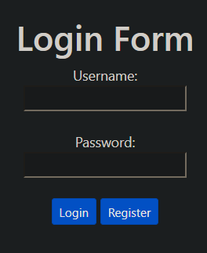
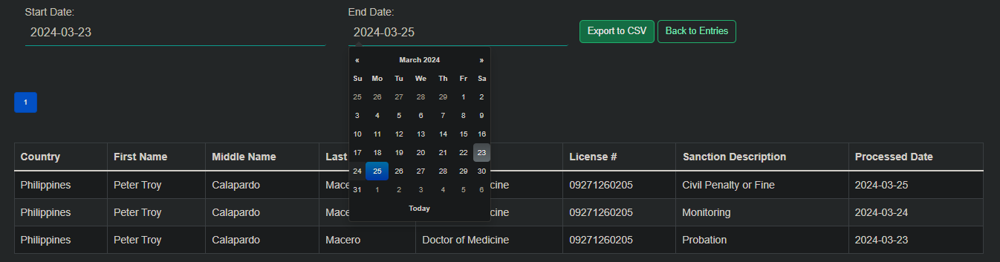
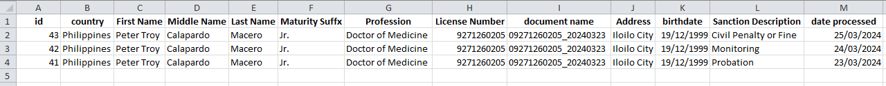
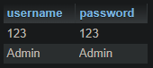
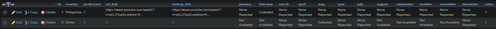

Sanction Tracker
I Start by logging in or Signing up
Input Provider Details

I can see the records that I created in the "Entries" Menu at the left sidebar

I can also search between the start and end date of the day I created the record, and can convert the data to excel
 I can add other sanctions in the "Sanctions" menu

I can add other healthcare professionals that I want to belong when I collect the data

In the "URL tracker" menu, this is the location where I can observe the progression of states and URLs encountered during the process of gathering providers with sanctions. I can navigate to each urls by clicking the "Web" and "Lookup" button

I can list my notes in the "notes" menu

These are the tables that I created in MariaDB for all of the pages in the Application

Table for notes

Table for provider_description

Table for providers entry

Table for sanction_tracker

Table for user
Table for web_tracker
Top Level Flowchart of the Sanction Tracker
Process Flowchart of the Sanction Tracker
Physical Design Model of the User and the Provider Data

Challenges encountered during the making of Sanction Tracker Project
Pagination Implementation:
DESCRIPTION: Implementing pagination for displaying large datasets on the Entries and Sanctions pages posed several challenges.
CAUSE: Initially, using basic pagination logic fetched all records from the database and displayed them on a single page. However, as the dataset grew larger, this approach became inefficient and slowed down page loading times.
OUTCOME: implemented server-side pagination using SQL's LIMIT and OFFSET clauses This approach significantly improved page loading times and user experience by loading only a subset of records at a time.
LESSONS LEARNED: Importance of considering scalability and performance implications when designing features.
Dark Feature Button:
DESCRIPTION: Adding a dark mode button for switching between light and dark themes had styling and user preference challenges.
CAUSE: Making dark mode work meant overriding default styles and ensuring it looked good on different browsers and devices.
ATTEMPTS TO SOLVE: First, I made a basic button with JavaScript. But getting the styles right and avoiding conflicts with other stylesheets was tough.
OUTCOME: I switched to a better method using CSS variables and separate stylesheets. Now, the theme stays the same even when users come back later.
LESSON LEARNED: Good CSS organization is key for consistent themes. CSS variables help with dynamic themes. And it's important to remember what users like for a smooth experience.
Exporting Data to Excel:
DESCRIPTION: Exporting data to Excel presented several challenges due to the complexity of file formats and managing datasets.
CAUSE: Lack of familiarity with PHPExcel library and PHP's file handling mechanisms resulted in difficulties implementing the feature effectively. Ensuring compatibility across different file formats and handling errors also posed challenges.
ATTEMPTS TO SOLVE: Attempted using basic PHP file handling functions for generating Excel files, encountering issues with formatting and compatibility.Explored various third-party libraries like PHPExcel and PhpSpreadsheet for exporting data to Excel but faced challenges integrating them into the existing codebase.Conducted research through online documentation, tutorials, and forums to understand best practices.
OUTCOME: After multiple trial and error attempts and thorough debugging, successfully implemented the export functionality without relying on PhpSpreadsheet library.
I utilized PHP's built-in functions for handling CSV files. The code generates a CSV file directly using PHP's fputcsv() function to write data to a file stream ($file). This approach doesn't involve any third-party libraries like PhpSpreadsheet or PHPExcel.
LESSON LEARNED: Emphasized the importance of understanding documentation and examples provided by third-party libraries before integration.
Gained insights into PHP's file handling mechanisms and enhanced problem-solving skills in managing data export operations.
Dropdown Option Implementation for available sanctions:
DESCRIPTION: The main challenge was implementing the dropdown option based on available sanctions.
CAUSE: Difficulty arose from integrating the dropdown with sanctions data from the sanctions page.
ATTEMPTS TO SOLVE: Attempted PHP for dropdown population, but faced limitations in dynamic updates.
Switched to JavaScript for dropdown updates, but encountered difficulties with integration.
OUTCOME: Successfully implemented dropdown options using JavaScript for dynamic updates.
Resolved integration issues by refining JavaScript functions for dropdown population.
LESSON LEARNED: Recognized the importance of JavaScript for dynamic user interactions.
Improved understanding of integrating frontend components with backend data.
Gained experience in troubleshooting JavaScript issues for consistent functionality.